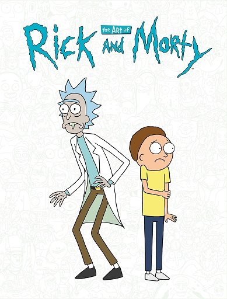

To be fair
you have to have a very high IQ to understand Rick and Morty. The humour is extremely subtle, and without a solid grasp of theoretical physics most of the jokes will go over a typical viewer's head. There's also Rick's nihilistic outlook, which is deftly woven into his characterisation- his personal philosophy draws heavily from Narodnaya Volya literature, for instance. The fans understand this stuff; they have the intellectual capacity to truly appreciate the depths of these jokes, to realise that they're not just funny- they say something deep about LIFE. As a consequence people who dislike Rick & Morty truly ARE idiots- of course they wouldn't appreciate, for instance, the humour in Rick's existential catchphrase "Wubba Lubba Dub Dub," which itself is a cryptic reference to Turgenev's Russian epic Fathers and Sons. I'm smirking right now just imagining one of those addlepated simpletons scratching their heads in confusion as Dan Harmon's genius wit unfolds itself on their television screens. What fools.. how I pity them. 😂
And yes, by the way, i DO have a Rick & Morty tattoo. And no, you cannot see it. It's for the ladies' eyes only- and even then they have to demonstrate that they're within 5 IQ points of my own (preferably lower) beforehand. Nothin personnel kid 😎
hi every1 im new!!!!!!!
*holds up spork* my name is katy but u can call me t3h PeNgU1N oF d00m!!!!!!!! lol…as u can see im very random!!!! thats why i came here, 2 meet random ppl like me ^_^… im 13 years old (im mature 4 my age tho!!) i like 2 watch invader zim w/ my girlfreind (im bi if u dont like it deal w/it) its our favorite tv show!!! bcuz its SOOOO random!!!! shes random 2 of course but i want 2 meet more random ppl =) like they say the more the merrier!!!! lol…neways i hope 2 make alot of freinds here so give me lots of commentses!!!! DOOOOOMMMM!!!!!!!!!!!!!!!! <--- me bein random again ^_^ hehe…toodles!!!!!
What the fuck
did you just fucking say to me,
you little bitch?
I'll have you know I graduated top of my class in the Navy Seals, and I've been involved in numerous secret raids on Al-Quaeda, and I have over 300 confirmed kills. I am trained in gorilla warfare and I'm the top sniper in the entire US armed forces. You are nothing to me but just another target. I will wipe you the fuck out with precision the likes of which has never been seen before on this Earth, mark my fucking words. You think you can get away with saying that shit to me over the Internet? Think again, fucker. As we speak I am contacting my secret network of spies across the USA and your IP is being traced right now so you better prepare for the storm, maggot. The storm that wipes out the pathetic little thing you call your life. You're fucking dead, kid. I can be anywhere, anytime, and I can kill you in over seven hundred ways, and that's just with my bare hands. Not only am I extensively trained in unarmed combat, but I have access to the entire arsenal of the United States Marine Corps and I will use it to its full extent to wipe your miserable ass off the face of the continent, you little shit. If only you could have known what unholy retribution your little "clever" comment was about to bring down upon you, maybe you would have held your fucking tongue. But you couldn't, you didn't, and now you're paying the price, you goddamn idiot. I will shit fury all over you and you will drown in it. You're fucking dead, kiddo.
A liberal Muslim homosexual ACLU lawyer professor
and abortion doctor was teaching a class on Karl Marx, known atheist
"Before the class begins, you must get on your knees and worship Marx and accept that he was the most highly-evolved being the world has ever known, even greater than Jesus Christ!"
At this moment, a brave, patriotic, pro-life Navy SEAL champion who had served 1500 tours of duty and understood the necessity of war and fully supported all military decision made by the United States stood up and held up a rock.
"How old is this rock?"
The arrogant professor smirked quite Jewishly and smugly replied "4.6 billion years, you stupid Christian"
"Wrong. It’s been 5,000 years since God created it. If it was 4.6 billion years old and evolution, as you say, is real… then it should be an animal now"
The professor was visibly shaken, and dropped his chalk and copy of Origin of the Species. He stormed out of the room crying those liberal crocodile tears.
The students applauded and all registered Republican that day and accepted Jesus as their lord and savior. An eagle named "Small Government" flew into the room and perched atop the American Flag and shed a tear on the chalk. The pledge of allegiance was read several times, and God himself showed up and enacted a flat tax rate across the country.
The professor lost his tenure and was fired the next day. He died of the gay plague AIDS and was tossed into the lake of fire for all eternity.
Semper Fi
Did you ever hear the story of
Darth Plagueis the Wise? I thought not. It's not a story the Jedi would tell you. It's a Sith legend. Darth Plagueis was a Dark Lord of the Sith, so powerful and so wise he could use the Force to influence the midichlorians to create life... He had such a knowledge of the dark side that he could even keep the ones he cared about from dying. The dark side of the Force is a pathway to many abilities some consider to be unnatural. He became so powerful... the only thing he was afraid of was losing his power, which eventually, of course, he did. Unfortunately, he taught his apprentice everything he knew, then his apprentice killed him in his sleep. Ironic, he could save others from death, but not himself.